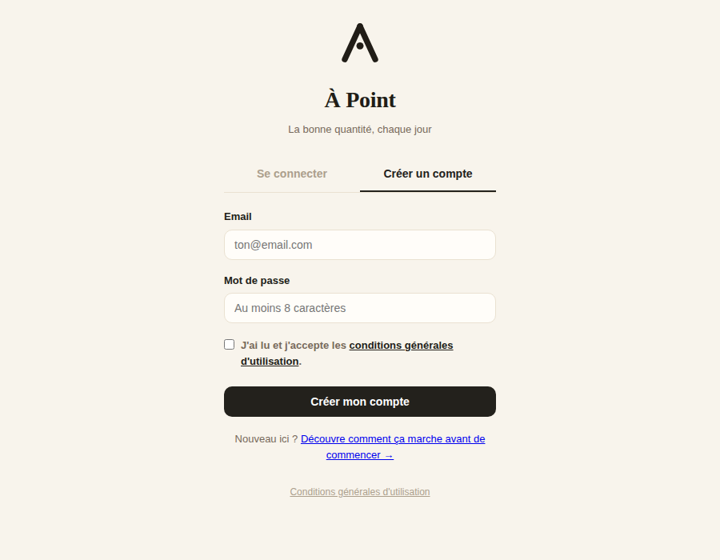
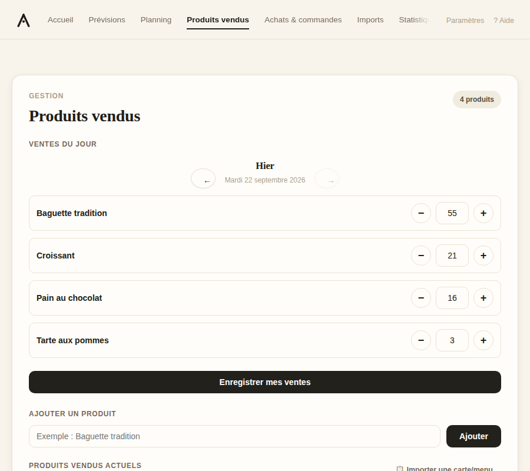
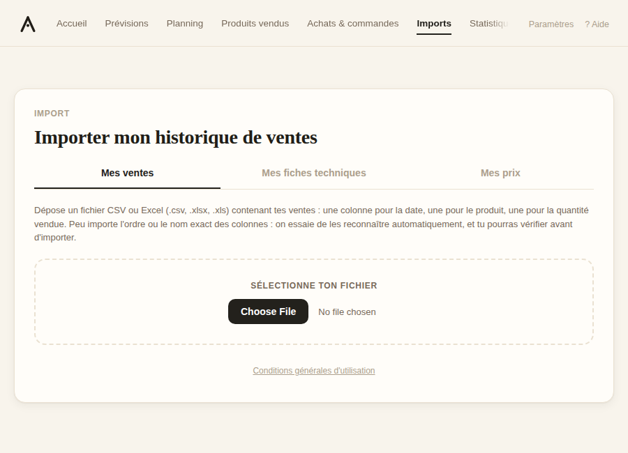
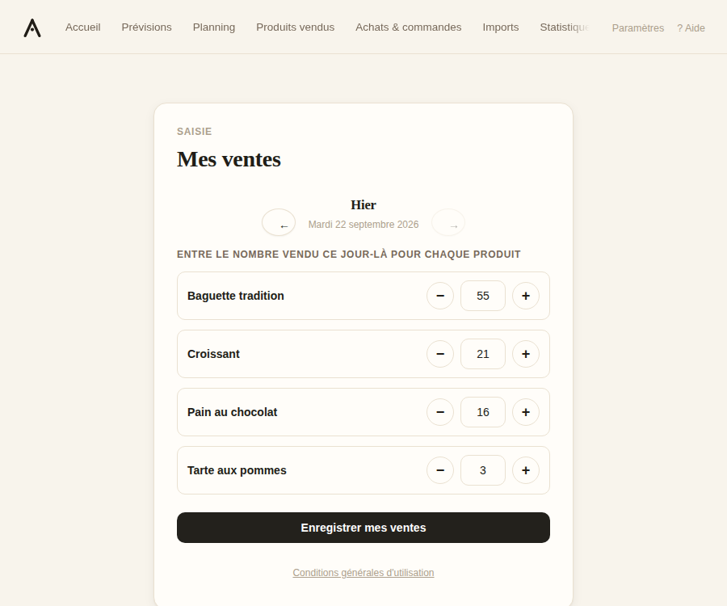
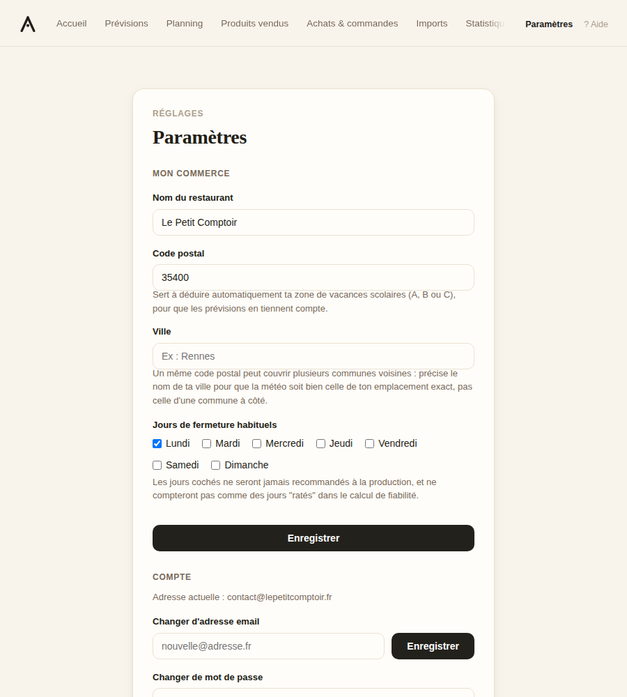
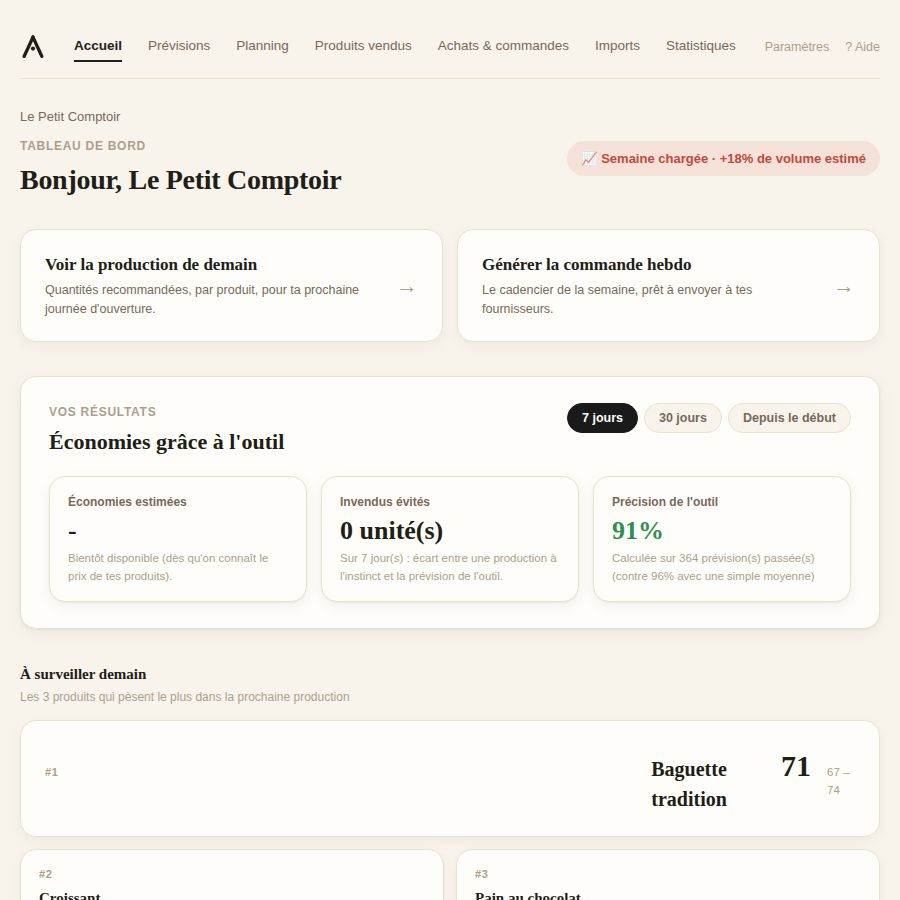
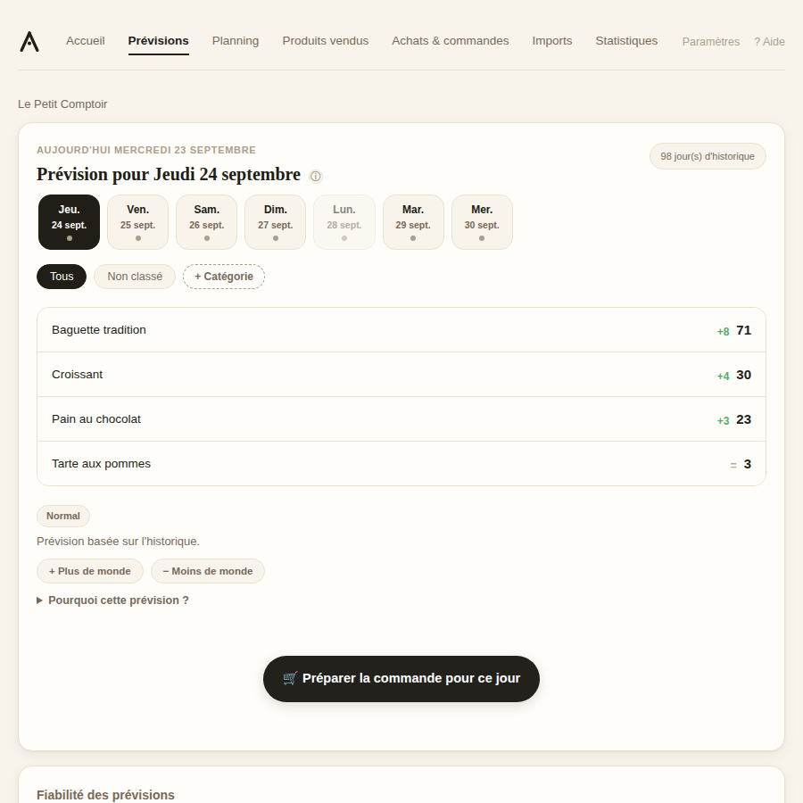

GUIDE DE DÉMARRAGE
Ce guide t'explique tout, de A à Z : à quoi ça sert et comment t'installer, étape par étape. Compte environ 5 minutes de lecture. Si tu préfères foncer directement, le lien "Passer" en haut te mène à la connexion.
EN BREF
À Point regarde ton historique de ventes et te dit, chaque jour, quelle quantité produire ou commander pour ton prochain jour d'ouverture — sans que tu aies besoin de faire le calcul toi-même.
Pourquoi pas continuer à l'estimer soi-même ?
Beaucoup de commerçants ajustent leur production « au feeling », à partir de ce dont ils se souviennent des jours précédents. Ça fonctionne, mais avec des limites bien réelles : la mémoire retient surtout les jours extrêmes (celui où tout est parti, celui où il a fallu jeter), pas la moyenne réelle ; il est difficile de comparer mentalement un samedi de pluie à un samedi ensoleillé, ou de se rappeler que les vacances scolaires changent la fréquentation d'un quartier à l'autre ; et ce calcul doit être refait chaque jour, pour chaque produit, ce qui prend du temps et de l'attention. À Point fait ce travail de façon systématique : il regarde tout l'historique réellement disponible — pas seulement ce dont on se souvient — traite chaque produit séparément, et applique toujours la même méthode. Ça réduit à la fois le risque de produire trop (invendus, gaspillage, argent perdu) et de produire trop peu (rupture, client déçu). Ce n'est pas magique ni infaillible (voir plus bas), mais c'est plus systématique que l'instinct seul, sans demander plus de travail au quotidien qu'avant.
DANS LE DÉTAIL
Pas besoin de comprendre cette partie pour utiliser l'outil au quotidien, mais si tu veux savoir ce qu'il y a derrière le chiffre affiché :
POUR DÉMARRER
Créer ton compte
Sur la page de connexion, clique sur l'onglet « Créer un compte », renseigne ton email et un mot de passe. Tu recevras un email de confirmation : clique sur le lien qu'il contient, puis reviens te connecter avec ce même email et mot de passe.

Ajouter tes produits
Dans « Mes produits », ajoute chaque produit que tu veux suivre (ex : Baguette tradition, Plat du jour, Café...). C'est la liste que l'outil utilisera ensuite pour reconnaître tes ventes — pas besoin de tous les ajouter à la main avant de commencer : un import de fichier (étape suivante) crée automatiquement les produits qu'il ne connaît pas encore.
Un produit composé de plusieurs ingrédients (comme un burger ou un plat préparé) peut aussi avoir sa propre « fiche technique » : clique sur le produit, puis ajoute chaque ingrédient et la quantité utilisée. À Point peut alors calculer directement, en plus de la quantité de produits à préparer, la quantité totale d'ingrédients nécessaires. C'est entièrement optionnel — utile pour un plat composé, inutile pour un produit simple comme un croissant. Tu peux les ajouter un par un ici, ou d'un coup par fichier si tu en as déjà la liste quelque part (voir l'étape suivante).

Renseigner ton historique de ventes
C'est l'étape la plus importante : les prévisions sont calculées à partir de tes propres ventes passées, donc plus cet historique est long et régulier, plus elles seront fiables. Avec très peu de données au départ, l'outil reste prudent (fourchettes larges) — c'est normal, ça se resserre au fur et à mesure. Deux façons de charger cet historique, selon ta situation :
Tu as un export de ta caisse
Va dans « Importer », onglet « Mes ventes », et dépose ton fichier CSV ou Excel (.csv, .xlsx, .xls). Il doit juste contenir, quelque part, une colonne avec une date, une avec le nom du produit, et une avec la quantité vendue — peu importe l'ordre des colonnes ou leur nom exact (« date », « jour », « quantité », « qté »... sont tous reconnus). À Point essaie de les détecter automatiquement et t'affiche un aperçu ligne par ligne avant d'importer quoi que ce soit ; si une colonne n'est pas reconnue, tu peux la choisir toi-même dans un menu déroulant. Les produits qui n'existent pas encore dans « Mes produits » sont créés automatiquement au passage.
Tu n'as pas d'export
Va dans « Mes ventes » et note, chaque jour, ce que tu as vendu la veille pour chaque produit. Ça prend 30 secondes et l'historique se construit tout seul, jour après jour — les toutes premières semaines seront juste moins précises, le temps d'accumuler assez de données.
Voici l'écran d'import :

Et l'écran de saisie quotidienne :

⚠️ Si tu importes un fichier, évite d'importer deux fois des dates qui se chevauchent avec un import précédent : les ventes seraient comptées en double pour ces jours-là. En cas de doute, mieux vaut tout réimporter d'un coup avec un seul fichier complet plutôt que par petits bouts qui se recoupent.
Bonus — tu as aussi un fichier avec tes recettes ? Le même écran « Importer » a un second onglet, « Mes fiches techniques », qui fonctionne pareil : dépose un fichier avec le produit, l'ingrédient, la quantité et l'unité, et tout est importé d'un coup — pratique si tu as déjà cette liste quelque part plutôt que de la ressaisir produit par produit dans « Mes produits ».
Régler tes paramètres (optionnel, mais conseillé)
Dans « Paramètres » : le nom de ton commerce (affiché sur le tableau de bord), ton code postal (sert à déduire ta zone de vacances scolaires et la météo locale), et tes jours de fermeture habituels (ils ne seront jamais recommandés à la production).

Consulter ton tableau de bord chaque jour
C'est l'écran que tu regarderas au quotidien. Il affiche, pour ton prochain jour d'ouverture, la quantité recommandée par produit, une fourchette, la comparaison avec le même jour la semaine dernière, et — quand ça joue un rôle — la raison d'un ajustement (jour férié, vacances, météo, événement signalé). Le détail de ce calcul est expliqué plus haut, dans « Comment la quantité recommandée est calculée ».

Un onglet « Semaine » donne aussi une vue sur les 7 prochains jours d'un coup, avec un badge par jour (normal, calme, chargé, fermé...) et la possibilité de signaler toi-même un jour où tu attends plus ou moins de monde que d'habitude.

À SAVOIR AVANT DE COMMENCER
À Point est encore en version de test, en évolution continue. Au tout début, avec peu d'historique, les recommandations seront prudentes et les fourchettes larges — c'est normal, ça se resserre avec le temps. Utilise-le comme une aide à la décision, pas comme une vérité absolue : ton propre jugement reste la référence finale, surtout les premières semaines.
Tes retours (ce qui marche, ce qui ne colle pas, ce qui manque) sont vraiment ce qui fait avancer l'outil — n'hésite jamais à les partager directement.